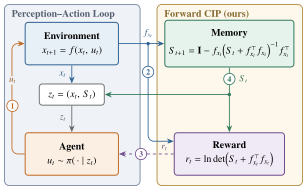
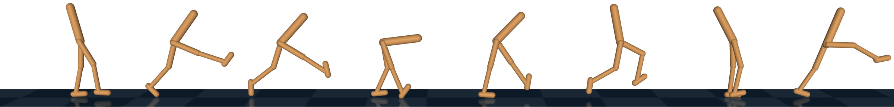
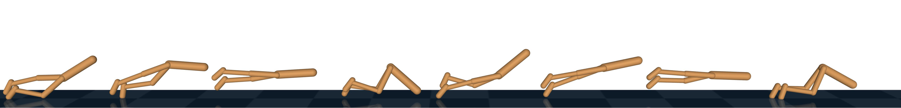
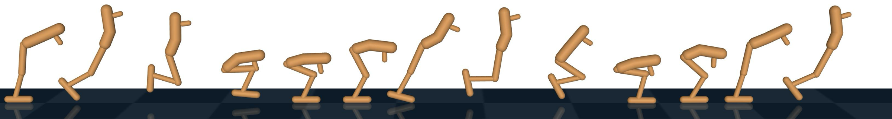
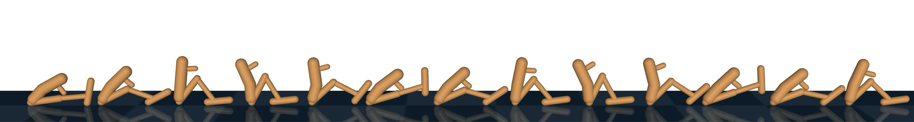
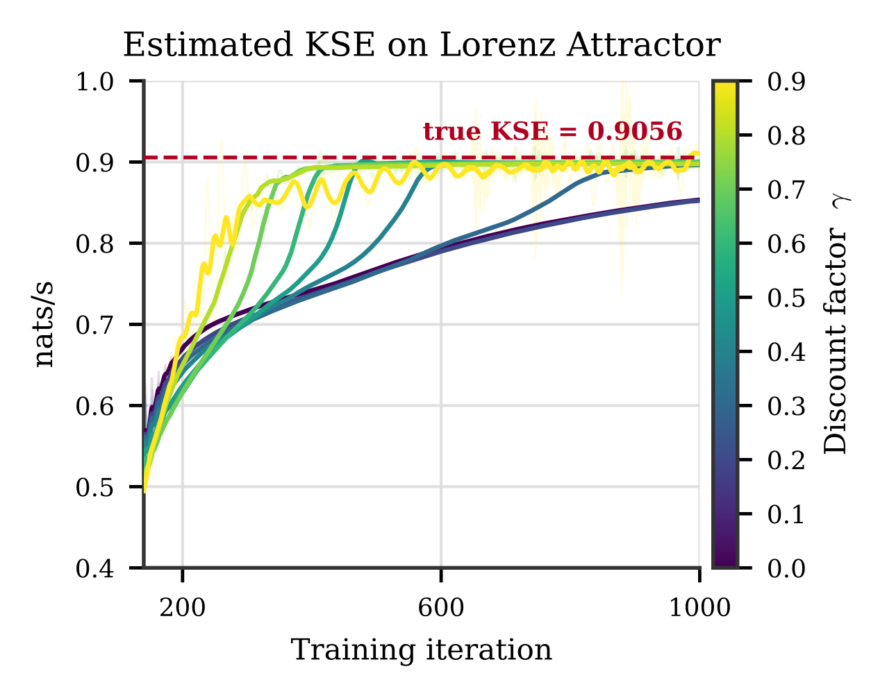
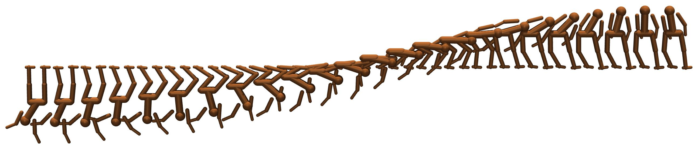

F-CIP pretraining followed by fine-tuning on F-CIP plus a β-weighted forward-velocity reward yields upright running and hopping, whereas the velocity reward alone collapses to bouncing and scooting along the ground. Our method never optimizes the oracle hand-designed reward.
Bellman Meets Kolmogorov Unsupervised Reinforcement Learning Through Mastering Chaos
1Texas Tech University · 2Purdue University · ∗Equal contribution · †stas.tiomkin@ttu.edu
A per-step reward and a memory matrix turn CIP into a standard RL problem

Making the edge of chaos directly optimizable as an RL objective
Reinforcement learning (RL) is a powerful paradigm for training agents, yet its success rests on domain expertise of human engineers who design informative reward signals for every new task. Unsupervised RL aims to replace this engineering with intrinsic motivation (IM): reward signals that emerge from the agent-environment interaction itself. Existing IM objectives, however, reward state space coverage or model surprise without providing a strong inductive bias towards useful behaviors. We introduce Forward CIP (Controllable Information Production), an objective derived from Kolmogorov-Sinai entropy that is directly compatible with existing RL algorithms. Maximizing this quantity alone results in unsupervised discovery of skills such as balancing and maintaining controllability, which are essential for more complex robot behaviors. Paired with a minimal forward-velocity reward, our method produces coordinated gaits such as hopping and running which otherwise require reward engineering to learn.




CIP in its original form is computed backward in time. RL needs a reward emitted forward.
RL imposes two structural requirements on its objective: (i) the reward must be emitted incrementally during the forward agent-environment interaction, and (ii) the reward must be Markovian in the agent's state to support bootstrapped value learning. CIP in its original form violates both. It is computed by a backward-in-time Riccati recursion: the increment at the current time depends on a matrix propagated from the terminal time, i.e., on the entire future trajectory.
We introduce Forward CIP (F-CIP): a forward-in-time incremental decomposition of CIP that makes it, for the first time, directly optimizable by RL. This resolves requirement (i) by exposing an instantaneous per-step reward, and requirement (ii) by identifying the information matrix \(S_t\) as a sufficient statistic of the past: augmenting the state with \(S_t\) exactly restores the Markov property (Proposition 3). We prove (Lemma 1, Theorem 4) that the forward iteration converges to the same quantity as the backward recursion, so no approximation is introduced. Empirically, PPO on the F-CIP reward alone yields unsupervised self-righting and standing. With a single additional velocity term, agents learn upright hopping and running; the same velocity reward without F-CIP collapses to degenerate gaits.
Our contributions are summarized as follows
- Theory. A forward-in-time characterization of CIP as a sum of per-step increments (Lemma 1).
- Algorithm. A numerically stable log-domain iteration exposing a per-step reward and an information-matrix memory \(S_t\), casting CIP maximization as a standard RL problem.
- Experiments. The first RL agent trained directly on the CIP objective. Maximizing it drives the unsupervised discovery of standing behaviors, while combining it with a downstream objective yields coherent locomotion strategies such as hopping and running which otherwise require reward engineering to learn.
Forward estimation of CIP
We factor the calculation of CIP into a sum of increments emitted during the forward agent-environment interaction, so that each increment can serve as an instantaneous reward. Our key insight comes from the control-estimation duality (Todorov 2008): the backward Riccati recursion in Equation (2) is a control-side object, and its estimation-side dual is a forward-in-time covariance iteration whose increments depend only on the current Jacobian \(\fx\) and a propagated information matrix \(S_t\).
Controllable Information Production
CIP is defined as the KSE of the open-loop dynamical control system \(f : \mathcal{X}\times\mathcal{U}\to\mathcal{X}\) where \(\mathcal{U}\) is the action space. Open-loop KSE is the entropy production rate which the agent is exposed to along its trajectory, considering that infinitesimal perturbations grow without regulation due to feedback by a policy \(\pi : \mathcal{X}\to\mathcal{U}\).
The symbol \(\sg\) denotes the stop-gradient operation. It was shown that CIP can be calculated via a backward recursion:
where \(\fx := \partial f/\partial x\,|_{(x_t,u_t)}\) is the local Jacobian with respect to state. If \(h_t\) is propagated backward in time along an infinitely long trajectory then its one-half time average converges to the open-loop KSE:
The increment between \(h_t\) and \(h_{t+1}\) in Equation (2) is not available to the agent during the forward rollout as a reward quantity: the source of CIP's incompatibility with RL. Furthermore, it depends on \(Y_{t+1}\), which is a function of the entire future trajectory: breaking the Markov Property required for bootstrapped value learning.
Let
be the open-loop covariance propagation equation for state uncertainty, where \(W_t\) is the process-noise covariance injected at step \(t\), uniformly bounded and positive definite. Then:
Direct propagation of Equation (4) is numerically unstable, since the condition number of \(\Sigma_t\) grows exponentially with time. Furthermore, there is no additive increment available to interpret as a reward. To overcome this instability we instead propagate \(\Sigma_t\) in the \(\ln\det\) domain via an iteration derived in Lemma 2 which exposes an instantaneous reward signal.
Let \(h_t := \ln\det\Sigma_t\) and let \(S_t := \Sigma_t^{-1}\) be the information matrix, and choose \(W_t = \I\) (admissible by the weighting invariance of Lemma 1). Then:
Proof. With \(W_t = \I\), Equation (4) reduces to \(\Sigma_{t+1} = \I + \fx\Sigma_t\fx^{\top}\) with \(\Sigma_0 = \I\). Taking \(\ln\det\) and applying Sylvester's identity yields the first equation; inverting and applying the Woodbury identity yields the second. □
The iteration in Lemma 2 is numerically stable: because \(\Sigma_t \succeq \I\) for all \(t\), the information matrix is bounded, \(0 \preceq S_t \preceq \I\), so the exponential growth of \(\Sigma_t\) underflows towards zero in \(S_t\), remaining well-conditioned as a neural network input.
The increment in Equation (5) defines a per-step reward
The reward carries the memory term \(S_t\) in its signature, so it is not Markovian in \(x_t\) alone.
The information matrix is a sufficient statistic of the past
As \(S_t\) is symmetric, only its \(n(n+1)/2\) unique entries need be carried, and its boundedness in \((0,\I]\) makes it a well-conditioned network input despite the augmentation.
Let \(z_t := (x_t, S_t) \in \mathcal{Z} := \mathcal{X}\times\mathcal{S}\), where \(\mathcal{S}\) denotes the symmetric matrices satisfying \(0 \preceq S \preceq \I\). Then the tuple \((\mathcal{Z}, \mathcal{U}, p_z, r)\), with \(r\) as in Equation (7), is a Markov decision process.
Proof. The transition of \(z_t\) factorizes: \(x_{t+1} \sim p(\cdot\mid x_t,u_t)\) is the environment step, and \(S_{t+1}\) in Equation (6) is a deterministic function of \((x_t,u_t,S_t)\) through the state Jacobian \(\fx\). The reward \(r(z_t,u_t)\) depends only on the current augmented state and action. Hence \(z_{t+1}\) and \(r_t\) are determined by \((z_t,u_t)\) alone. □
In the MDP of Proposition 3, the undiscounted return telescopes, \(\sum_{t=0}^{T-1} r(z_t,u_t) = \ln\det\Sigma_T\), and consequently
Maximizing the average reward of the MDP is therefore equivalent to maximizing CIP.
Proof. By Lemma 2, \(\sum_{t=0}^{T-1} r_t = h_T - h_0 = \ln\det\Sigma_T\). The limit follows from Lemma 1. □
Implementation. Theorem 4 is an average-reward statement, whereas standard policy-gradient algorithms optimize a discounted objective. In practice we optimize the discounted proxy with \(\gamma\) close to 1; the discounted-optimal policy converges to the average-reward-optimal policy as \(\gamma\to 1\). The augmented state \(z_t = (x_t, S_t)\) is passed to both the value function and the policy. The Jacobian \(\fx\) is obtained from the Mujoco-MJX simulator at each step.
- Require: policy \(\pi_\theta\), value function \(V_\phi\), iterations \(T_{\mathrm{pre}}, T_{\mathrm{adapt}}, T_{\mathrm{warm}}\), extrinsic weight \(\beta_{\max}\), horizon \(H\), \(N\) environments
- for \(i := 1,\dots,T_{\mathrm{pre}} + T_{\mathrm{adapt}}\) do
- \(\beta \leftarrow \beta_{\max}\cdot\min\!\Big(1, \frac{\max(0,\, i - T_{\mathrm{pre}})}{T_{\mathrm{warm}}}\Big)\)
- for each of \(N\) parallel environments do
- \(x_0 \sim \rho_0,\quad S_0 \leftarrow \I\)
- for \(t := 0,\dots,H-1\) do
- \(z_t \leftarrow (x_t, S_t)\)Prop. 3
- Take action \(u_t \sim \pi_\theta(\cdot\mid z_t)\)
- Receive \(x_{t+1}\) and \(\fx\)
- \(r_t \leftarrow \ln\det\!\big(S_t + \fx^{\top}\fx\big)\)Eq. (7)
- \(S_{t+1} \leftarrow \I - \fx\big(S_t + \fx^{\top}\fx\big)^{-1}\fx^{\top}\)Eq. (6)
- \(\hat r_t \leftarrow r_t + \beta\, v_t\)
- end for
- end for
- Update \(\theta, \phi\) on \(\{(z_t, u_t, \hat r_t)\}\)Standard PPO
- end for
Three questions
Our experiments address three questions: Q1. Does a learned value function converge to the true KSE on a known attractor? Q2. What behaviors are induced by maximizing F-CIP, with no extrinsic reward? Q3. Can F-CIP simplify reward engineering on locomotion tasks?
The learned value function recovers the true KSE of the Lorenz attractor
We validate the convergence of our learned incremental estimator on the Lorenz attractor with a known KSE value of 0.906 nats/s. The KSE is extracted from the learned estimator as \(\frac{1-\gamma}{2\Delta t}\mathbb{E}[V_\phi(z_t)]\), where the prefactor converts the accumulated discounted return into a rate. Here \(V_\phi\) is estimated by TD learning on trajectories sampled from the attractor. Figure 4a demonstrates that the estimator converges to the known value for a range of discount factors \(\gamma\). Setting \(\gamma\) to zero still enables estimation of KSE since that special case corresponds to the value function learning only the instantaneous reward. However, we observe that increasing values of \(\gamma\) result in faster convergence to the true KSE.
Since the value function learns a discounted summation its output can be interpreted as a local indicator of the "chaos-to-go". The value function attains its largest values near the splitting point between the two attractor wings, where the local dynamics are most unstable and trajectories can diverge towards either wing. This property motivates using the learned value as a local signal of proximity to the EOC.

Maximizing F-CIP alone produces swing-up and upright stabilization
Maximizing F-CIP alone, with no extrinsic reward, produces swing-up and upright stabilization: Figure 2 shows a full swing-up and stabilization trajectory in the gibbon environment. Table 1 quantifies this across all four systems, reporting the normalized height of each system's extremity (i.e. pendulum tip; gibbon head) over the final 10% of the episode, averaged over 10 seeds. All agents start from the hanging pose, so the intrinsic objective alone must drive both swing-up and stabilization. F-CIP is the only objective that reliably reaches the upright configuration on all four systems.
Maximizing F-CIP alone, with no extrinsic reward. The pure-intrinsic experiment runs only the first \(T_{\mathrm{pre}}\) iterations, during which \(\beta = 0\).

| Intrinsic Motivation Objective | ||||||
|---|---|---|---|---|---|---|
| System | F-CIP (PPO) | F-CIP (APPO) | DIAYN | SMM | ICM | APT |
| CP | 0.99 | 0.99 | 0.26 | 0.68 | 0.07 | 0.64 |
| DP | 0.99 | 0.99 | 0.44 | 0.06 | 0.05 | 0.25 |
| TP | 0.99 | 0.99 | 0.38 | 0.14 | 0.09 | 0.48 |
| G | 0.98 | 0.99 | 0.51 | 0.52 | 0.05 | 0.41 |
Table 1Comparison of IM on pendulum environments. We report mean extremity height over the final 10% of the episode averaged over 10 random seeds. Values are min-max normalized so that 0.0 corresponds to the initial hanging configuration and 1.0 corresponds to the fully upright pose. The abbreviations CP, DP, TP, and G correspond to cart pole, double pendulum, triple pendulum, and gibbon, respectively. The comparison is not algorithm-matched: F-CIP is optimized with PPO/APPO, whereas the baselines use the reference URLB implementations, which are built on DDPG.
CIP supplies the inductive bias that reward engineers otherwise encode by hand
Inducing coherent locomotion strategies such as hopping and walking using RL usually requires careful reward engineering. The simplest reward of maximizing forward velocity describes the desired outcome to move forward but imposes no bias on how that should be achieved. Maximizing a forward velocity reward with an RL agent results in degenerate solutions such as "scooting" along the ground (gray rows of Figure 1) rather than adopting an upright gait. The standard remedy is to design a reward to incentivize upright posture, requiring domain knowledge about the robot itself. We show that CIP can supply the inductive bias to maintain an upright posture, eliminating the need for this domain knowledge.
Our procedure has two phases (Algorithm 1). We first pre-train the agent for \(T_{\mathrm{pre}}\) steps to maintain a stable and upright posture using the F-CIP reward (Equation (7)). Next, we adapt the pre-trained policy for \(T_{\mathrm{adapt}}\) steps by exposing it to a forward velocity reward weighted by a \(\beta\) parameter, which warms up from zero towards \(\beta_{\max}\) over \(T_{\mathrm{warm}}\) steps. The agent optimizes the combined objective: \(\hat r_t = r_t + \beta v_t\), where \(v_t\) is the forward velocity component. Crucially, our method never optimizes the oracle hand-designed reward; that reward is only used at test time to evaluate task return.
| Hopper | Walker | |||||
|---|---|---|---|---|---|---|
| Method | Task Return ↑ | Fwd. Vel. (m/s) | Height (m) | Task Return ↑ | Fwd. Vel. (m/s) | Height (m) |
| Ours | 0.39 ± 0.38 | 1.48 ± 0.33 | 0.73 ± 0.15 | 0.61 ± 0.03 | 4.52 ± 0.22 | 1.19 ± 0.04 |
| Fwd. Vel. only | 0.00 ± 0.00 | 0.77 ± 0.17 | 0.33 ± 0.03 | 0.10 ± 0.04 | 4.41 ± 0.22 | 0.47 ± 0.10 |
| ICM† | 0.00 ± 0.00 | 1.19 ± 0.03 | 0.28 ± 0.02 | 0.06 ± 0.01 | 4.10 ± 0.17 | 0.35 ± 0.03 |
| APT† | 0.00 ± 0.00 | 1.36 ± 0.06 | 0.29 ± 0.04 | 0.10 ± 0.01 | 4.63 ± 0.18 | 0.47 ± 0.04 |
| DIAYN† | 0.00 ± 0.00 | 1.36 ± 0.05 | 0.28 ± 0.02 | 0.06 ± 0.01 | 2.00 ± 0.21 | 0.43 ± 0.04 |
| SMM† | 0.00 ± 0.00 | 1.66 ± 0.06 | 0.22 ± 0.02 | 0.11 ± 0.02 | 4.26 ± 0.16 | 0.51 ± 0.04 |
| Full reward (oracle) | 0.52 ± 0.12 | 1.04 ± 0.23 | 0.79 ± 0.09 | 0.78 ± 0.04 | 6.07 ± 0.33 | 1.13 ± 0.02 |
Table 2Reward simplification on Hopper and Walker. Mean and standard deviation calculated over 10 evaluations of the trained policies. Ours pre-trains with F-CIP alone, then fine-tunes on the forward-velocity reward while continuing to maximize F-CIP (Algorithm 1). Task return is the comparison metric and is measured with the full hand-designed reward; bold marks the best performance among the methods. Forward velocity and torso height are reported as diagnostics of the emergent gait. Each pretraining baseline (†) is run in its intended URLB (DDPG) configuration: the intrinsic objective is maximized during pretraining and then replaced by the velocity reward during fine-tuning. In contrast, Ours continues to maximize F-CIP throughout fine-tuning. Ours, Fwd. Vel. only, and Full reward (oracle) are trained with the same PPO implementation, so the Fwd. Vel. only row serves as an algorithm-matched control.
Table 2 reports rollout statistics for both tasks. All baselines collapse to scooting: they hold a low torso height and accrue near-zero task return. Our method instead learns to hop and to run (teal rows of Figure 1), maintaining an upright posture and recovering the majority of the oracle's task return despite never observing that reward.
On hopper, the large variance of our task return is an artifact of the oracle metric rather than of the gait: the oracle reward is gated to zero whenever the torso leaves a narrow height band, and while all 10 evaluation seeds hop upright, some hop at heights outside this band and score zero despite a correct gait. Notably, our hopping policy travels ∼40% faster than the oracle policy (1.47 vs. 1.04 m/s), suggesting that the hand-designed height band could be overly restrictive: it penalizes the torso height excursions that fast hopping requires. On walker, our gait falls within the oracle's height band, yielding correspondingly low variance. Its forward velocity is comparable to the fastest baselines, yet ours is the only method besides the oracle to achieve an upright running gait whereas the baselines attain their speed by scooting.
Intrinsic motivation need not be confined to an exploration bonus
We introduced F-CIP, a practical scheme for maximizing CIP with modern RL. Whereas CIP was previously optimizable only by expensive MPC planners, our exact per-step decomposition makes it compatible with bootstrapped value learning: the learned value function recovers the true KSE of a known chaotic attractor (Q1), maximizing the F-CIP reward alone produces swing-up and upright stabilization where standard IM objectives, in their reference URLB configurations, do not (Q2), and F-CIP pre-training replaces the postural reward engineering that locomotion tasks otherwise require (Q3).
These results support a broader position: intrinsic motivation need not be confined to an exploration bonus. Traditionally in continuous control, IM objectives serve almost exclusively as auxiliary signals. This aligns with their underlying design, as principles like coverage and surprise are inherently geared toward exploration. CIP is a different IM signal: because it targets EOC states directly, it produces useful behavior in both roles. As a primary objective it discovers self-righting with no external signal; as an auxiliary term it supplies an inductive bias toward controllable instability that reward engineers otherwise encode by hand.
Limitations
Our method has three main limitations.
Analytical Jacobians
The reward requires analytical Jacobians. Differentiable simulators such as MuJoCo-MJX provide these efficiently, and F-CIP is well suited to this setting; physical reality, however, offers no Jacobians, so sim-to-real transfer will require either training entirely in simulation or learning the Jacobians from data.
Memory grows quadratically
The memory matrix \(S_t\) grows quadratically in the state dimension. On-policy training requires every parallel environment to carry its own \(S_t\), and off-policy training would require storing it per-transition in a replay buffer, so scaling to high-dimensional robots demands a compressed representation.
Degenerate maximizers
CIP admits degenerate maximizers, analogous to the noisy-TV problem of curiosity: in the pendulum systems the agent can accumulate reward by spinning freely, and in the hopper by uncontrolled thrashing. Adding joint damping removed these optima in our environments: damping taxes indiscriminate velocity accumulation while leaving configuration-dependent instability rewarded. However, this is an environment-level modification rather than an objective-level one, and a principled resolution remains open.
Cite this work
@inproceedings{shah2027bellman,
title = {Bellman Meets Kolmogorov: Unsupervised Reinforcement Learning Through Mastering Chaos},
author = {Shah, Tristan and Chung, Wooyoung and Makarenko, Volodomyr and Wachs, Juan and Tiomkin, Stas},
booktitle = {Proceedings of the AAAI Conference on Artificial Intelligence},
year = {2027}
}
Builds on Controllable Information Production: Shah, T.; and Tiomkin, S. 2026. arXiv:2601.22449.